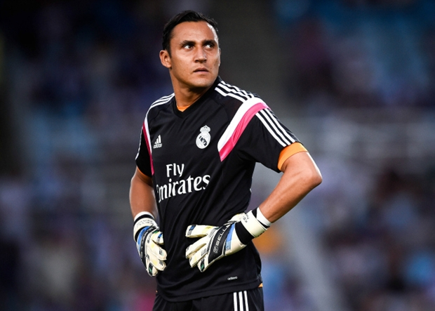

Bóng đá Anh
Ngoại hạng | Hạng nhất | Hạng 2

Liverpool muốn “giải thoát” cho thủ môn thất sủng của Real Madrid
Theo báo chí Anh, Liverpool đang lên kế hoạch chiêu mộ Keylor Navas, thủ môn đang bị thất sủng tại Real Madrid trong kỳ chuyển nhượng mùa Hè tới nhằm thay thế cho Simon Mignolet

PSG mời gọi, Di Maria cân nhắc rời Man Utd
Theo những thông tin từ trang givemesport, Angel di Maria đã bắt đầu xem xét ý tưởng rời bỏ Manchester United để gia nhập PSG.

Tottenham chi khủng để có song sát Harry Kane – Berahino
Harry Kane tỏa sáng, và Tottenham đang muốn bạo chi để mua thêm Berahino, tạo thành cặp song sát người Anh vào mùa hè.

Francis Coquelin: ‘Ký hợp đồng mới với Arsenal là quyết định dễ dàng’
Tiền vệ Francis Coquelin tiết lộ rằng anh không hề do dự khi được Arsenal đề nghị ký một hợp đồng mới.

Lộ diện ưu tiên chuyển nhượng đầu tiên của M.U
Theo The Sun, Louis van Gaal muốn cầu thủ chạy cánh của PSV, Memphis Depay trở thành tân binh đầu tiên của Man Utd trong kỳ chuyển nhượng mùa hè 2015.